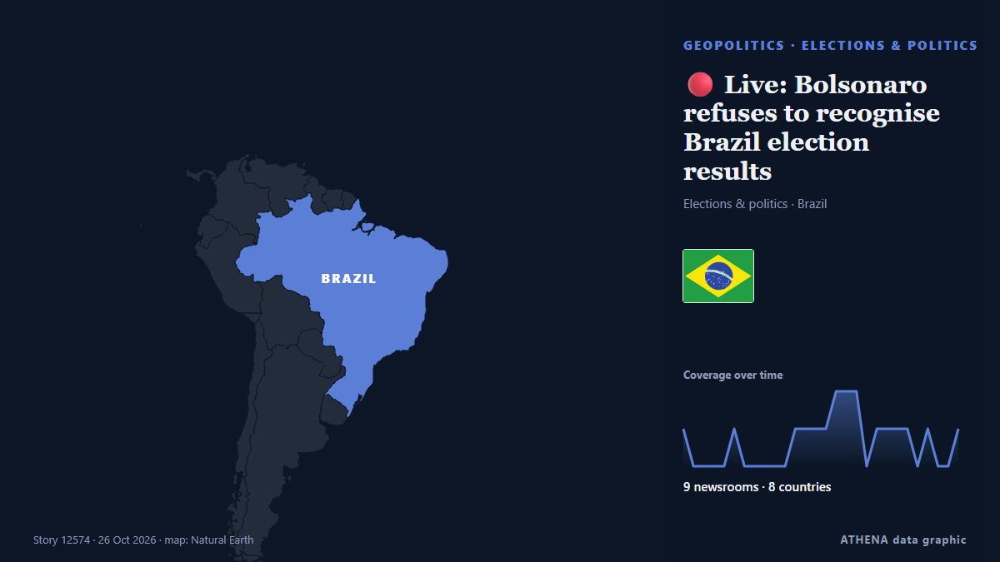

🔴 Live: Bolsonaro refuses to recognise Brazil election results

It is the first time in Brazil's history since the return of democracy in the country that a candidate who lost in the first round managed to come back and win in the runoff. de France 24 English
Informado de forma independiente por 9 medios de 8 países desde el 19 oct; el primero fue BBC News; la cobertura ya se ha calmado. ATHENA califica el riesgo como bajo (0.9/10), sobre todo por la gravedad del daño descrito y su alcance geográfico y sectorial. La confianza es del 87 % (alta): lo corroboran 9 medios independientes, con una fiabilidad media de las fuentes del 78 %. Medios por país: Catar (5), Francia (4), Reino Unido (1). Cobertura: del 19 oct al 26 oct, 165 horas.
Por qué importa: Los hechos de seguridad y diplomacia pueden alterar alianzas, comercio y mercados mucho más allá de los países implicados.
Qué ha cambiado: 2 informaciones nuevas de 2 redacciones en las 24 horas hasta el 26 oct.
Primer titular: Brazil’s Lula and Bolsonaro about even ahead of election run-off: Poll
Los titulares se muestran en inglés, tal como se publicaron.
De un vistazo
Seleccionado, puntuado y redactado por la metodología publicada de ATHENA. Ningún editor interviene en eventos concretos. Cómo se elabora ›
| 19 Oct 11:41 UTC | 1 |
|---|---|
| 19 Oct 17:41 UTC | 0 |
| 19 Oct 23:41 UTC | 0 |
| 20 Oct 05:41 UTC | 0 |
| 20 Oct 11:41 UTC | 0 |
| 20 Oct 17:41 UTC | 1 |
| 20 Oct 23:41 UTC | 0 |
| 21 Oct 05:41 UTC | 0 |
| 21 Oct 11:41 UTC | 0 |
| 21 Oct 17:41 UTC | 0 |
| 21 Oct 23:41 UTC | 0 |
| 22 Oct 05:41 UTC | 1 |
| 22 Oct 11:41 UTC | 1 |
| 22 Oct 17:41 UTC | 1 |
| 22 Oct 23:41 UTC | 1 |
| 23 Oct 05:41 UTC | 2 |
| 23 Oct 11:41 UTC | 2 |
| 23 Oct 17:41 UTC | 2 |
| 23 Oct 23:41 UTC | 0 |
| 24 Oct 05:41 UTC | 1 |
| 24 Oct 11:41 UTC | 1 |
| 24 Oct 17:41 UTC | 1 |
| 24 Oct 23:41 UTC | 1 |
| 25 Oct 05:41 UTC | 0 |
| 25 Oct 11:41 UTC | 1 |
| 25 Oct 17:41 UTC | 0 |
| 25 Oct 23:41 UTC | 0 |
| 26 Oct 05:41 UTC | 1 |
| 19 Oct 18:56 UTC | 0.0 |
|---|---|
| 25 Oct 12:46 UTC | 1.6 |
| 26 Oct 12:07 UTC | 0.0 |
| 28 Oct 02:14 UTC | 0.9 |
| 28 Oct 02:14 UTC | 0.9 |
Por qué estas cifras
Importancia
Riesgo
Confianza
La cobertura: quién informó y cuándo
titular tal como se publicó · abre el original- BBC News · Reino UnidoPersonal attacks fire up debate before Brazil's run-off vote
- Latin America Reports · LATBrazil’s presidential debate: Accusations overshadow proposals
- Al Jazeera English · CatarBrazil’s president appeals to undecided voters ahead of run-off
- ABC News (International) · Estados UnidosBrazil's Congress's shift to the right could change Latin America's powerhouse. Here’s what to know
- France 24 English · FranciaBack to the Bolsonaros? Brazil presidential run-off goes down to the wire
- Buenos Aires Times · ArgentinaPollsters point to technical tie in Brazil election run-off
- France 24 English · Francia🇧🇷 Brazil: Why should you care about the country's elections?
- CBC News · CanadáA polarized Brazil heads to presidential vote with economy, corruption top of mind
- France 24 English · FranciaBrazil's tense presidential run-off campaign feels like a psychological thriller
- Al Jazeera English · CatarWhat to know as Brazil prepares for tense presidential run-off
- Latin America Reports · LATBrazilians worldwide prepare for final round of presidential election
- Latin America Reports · LATDivided by politics, united by anxiety: Brazil’s election takes an emotional toll
- Al Jazeera English · CatarBrazil’s Lula and Bolsonaro debate policy proposals before run-off
- Al Jazeera English · CatarBrazil’s Lula and Bolsonaro about even ahead of election run-off: Poll
- Al Jazeera English · CatarBrazil’s Lula, Bolsonaro draw thousands to election-eve rallies
- Times of India · IndiaLula's comeback bid vs Bolsonaro's son: Brazil votes in high-stakes run-off
- France 24 English · Francia🔴 Live: Bolsonaro refuses to recognise Brazil election results
- News of Bahrain · BaréinLula Wins Re-election in Brazil as Bolsonaro Rejects Run-off Result